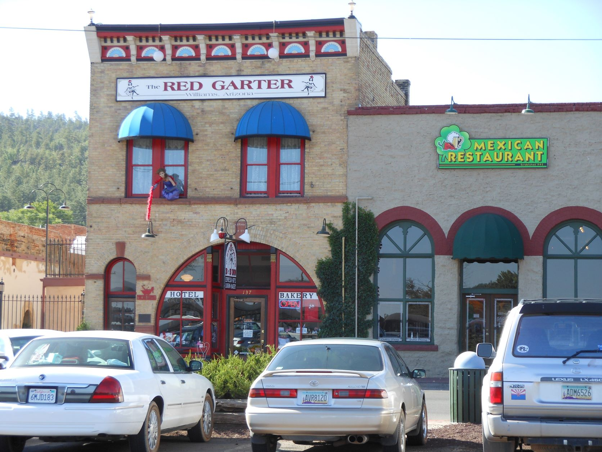
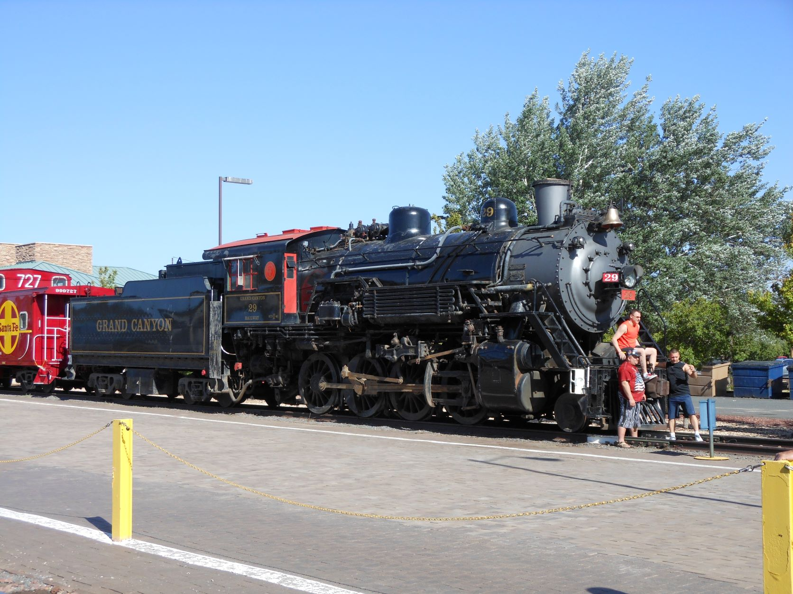
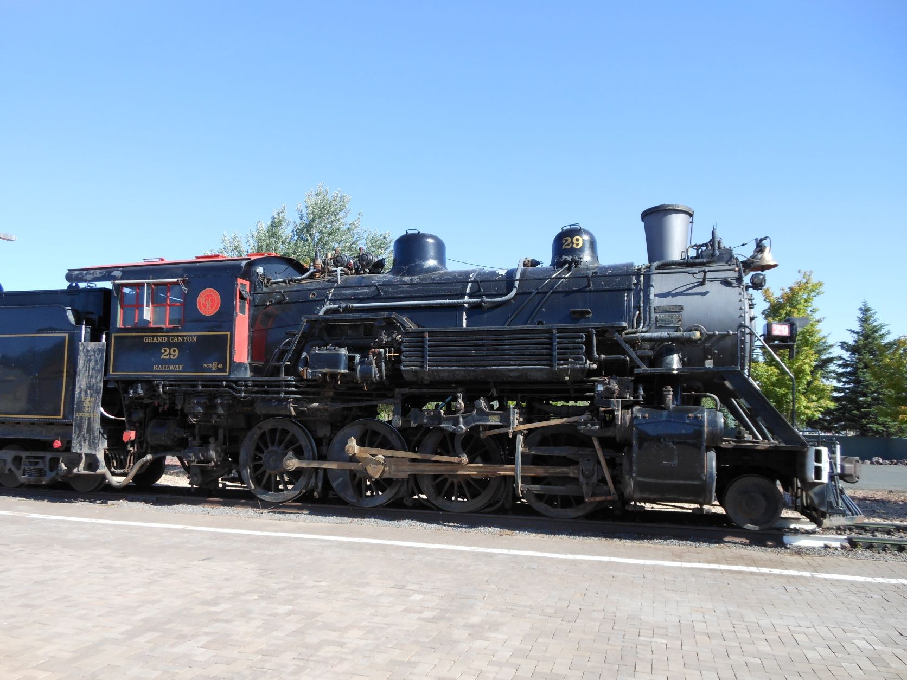
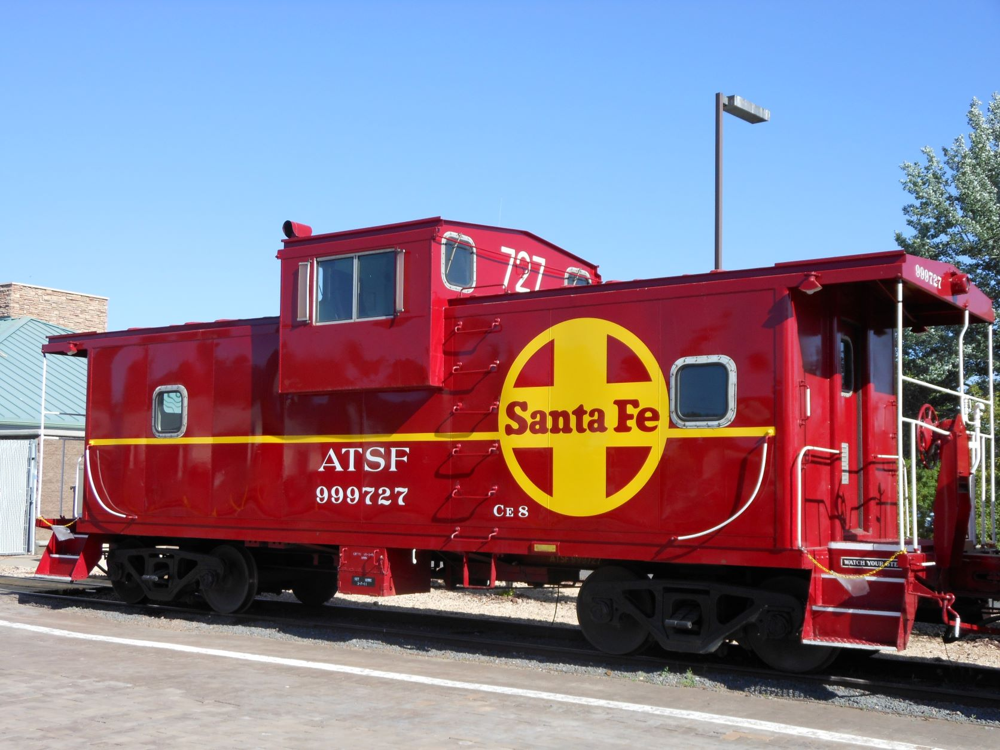
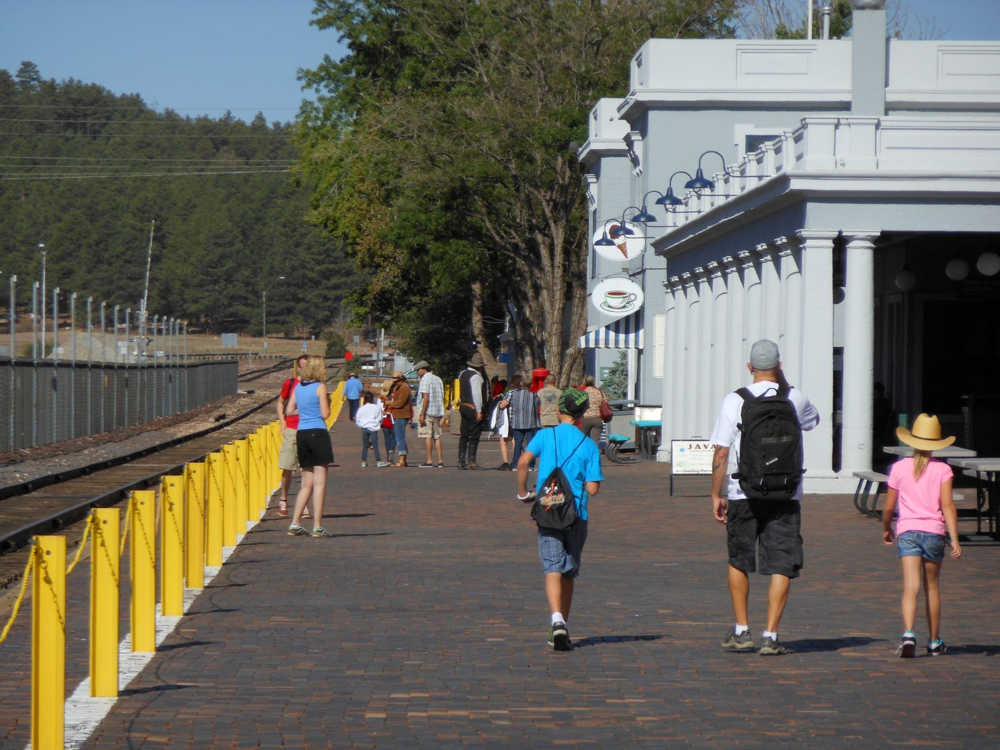
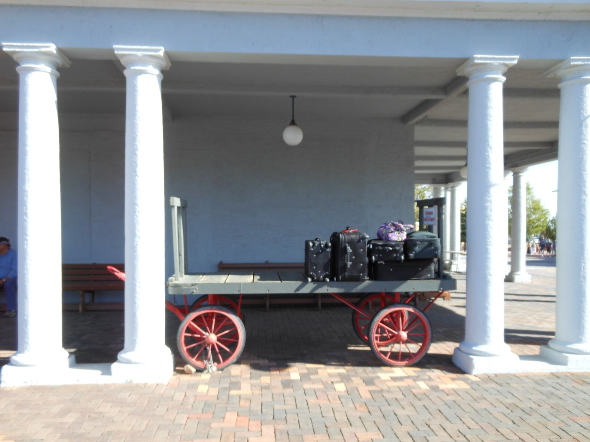
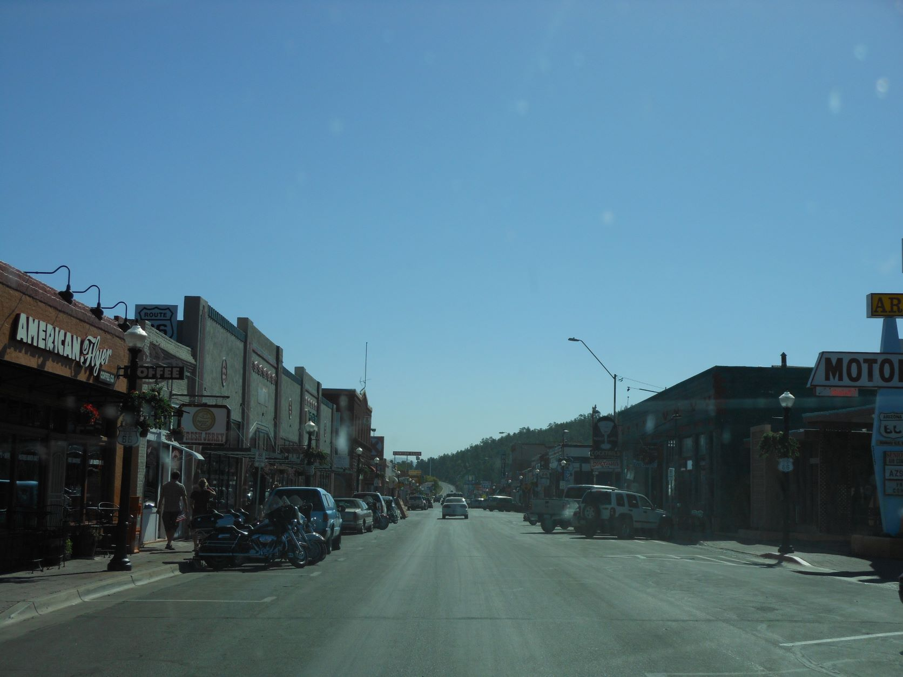
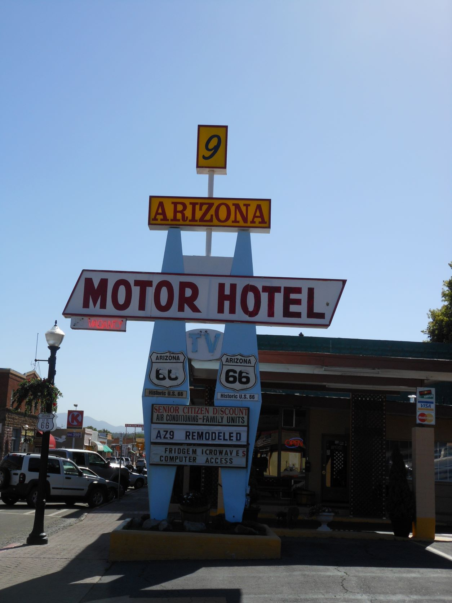
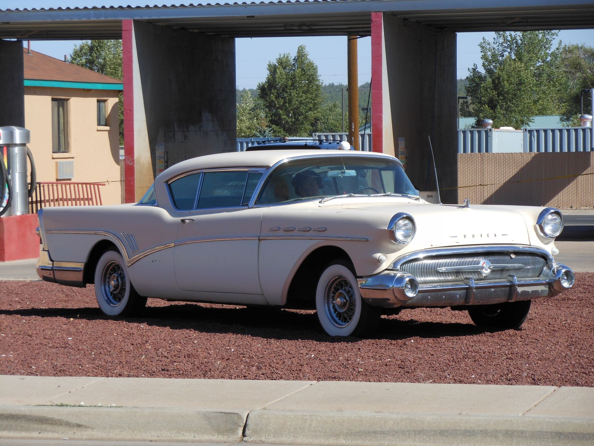

June 15, 2012 - Williams, AZ

The Red Garter - Williams, AZ

Grand Canyon Railway 2-4-0 steam locomotive - Williams, AZ

Grand Canyon Railway 2-4-0 steam locomotive - Williams, AZ

ATSF caboose - Williams, AZ

Railway station platform - Williams, AZ

Railway baggage cart - Williams, AZ

Main street - Williams, AZ

Arizona 9 Motor Hotel - Williams, AZ

1956 Buick Century with whitewalls - Williams, AZ